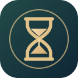

Смена не начатаМОСКВА
00:00:00
Ты вне смены
Начни смену одним нажатием

Время. График. Деньги.
Результат последнего сохранения не подтверждён. Проверь его перед новой отметкой.
Твой рабочий день
Начни смену одним нажатием
Это график, не отработанное время. Нажми день, чтобы открыть его.
Загрузка…
Работа и отдых
| День | План | Факт | Часы | Начислено | Офис | Статус |
|---|
Нажми на дату для разбора. «—» означает отсутствие подтверждённых данных, а не нулевое время.
Клавиатура: стрелки — по дням, Home/End — по неделе, Page Up/Down — по месяцам. Enter — открыть день.
Нажми дату, чтобы изменить график или посмотреть смену. Пустой день — план не задан.
Без догадок
Суммы скрыты. Нажми на глаз, чтобы посмотреть их. Время автоскрытия настраивается в разделе «Ещё».
Внесённые поступления
Разница между начислением и поступлениями за выбранный месяц.
Поступления по всем рабочим месяцам
История выплат скрыта. Покажи суммы, чтобы открыть её.
Нажми на точку, чтобы открыть день.
Покажи суммы, чтобы увидеть годовую динамику.
Только закрытые смены. Нажми месяц, чтобы открыть его расчёт. Годовой PDF доступен в «Деньги» → «Скачать Excel / PDF».
Расчёт не заменяет ведомость работодателя. Налоги и задолженность автоматически не вычисляются.
Всё под рукой
Быстрый доступ
При сворачивании Telegram суммы скрываются сразу. Экранная блокировка требует нажать «Продолжить», но не заменяет PIN-код телефона или пароль Telegram.
Установи шестизначный PIN. Он проверяется сервером, а не хранится в браузере. PIN можно будет заменить или отключить.
Биометрия доступна внутри поддерживаемого Telegram.
Код показан только сейчас. При потере PIN он понадобится для доступа. Не отправляй его в чат.
Жесты обрабатываются локально. Для iOS системный запрос разрешения датчика может появиться один раз. Если браузер не передаёт данные движения, обычное автоскрытие остаётся доступным. Alt+Shift+H скрывает суммы.
На устройстве сохраняются настройки вида и черновик без сети. История смен загружается с сервера.
Разбор дня
Подробности временно закрыты. Нажми на глаз, чтобы продолжить редактирование.
Мои смены
Денежная форма временно закрыта. Нажми на глаз, чтобы продолжить.
Сессия приостановлена
Кабинет приостановлен после отсутствия активности.
Денежные суммы останутся скрытыми. Чтобы продолжить, нажми кнопку ниже.
PIN и биометрия — дополнительная защита Mini App. Вход в Telegram всё равно должен быть защищён.